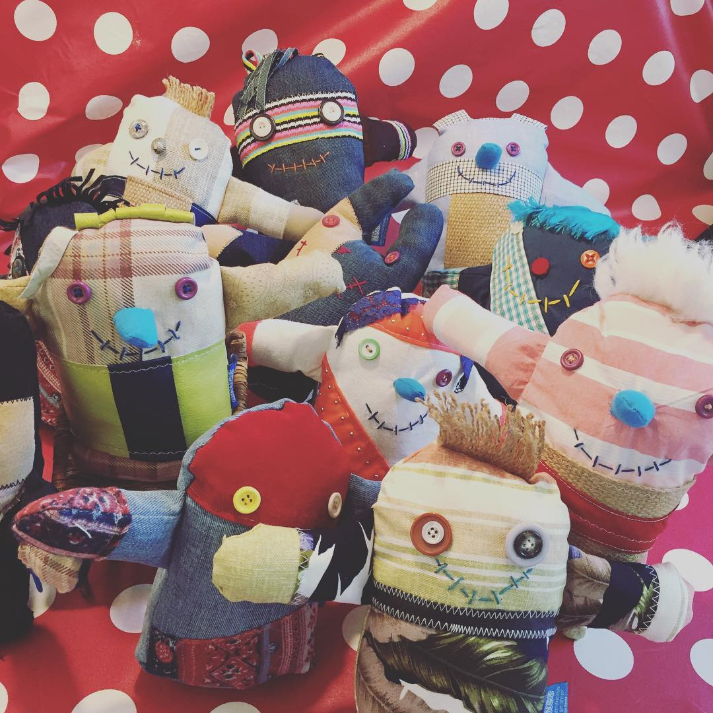
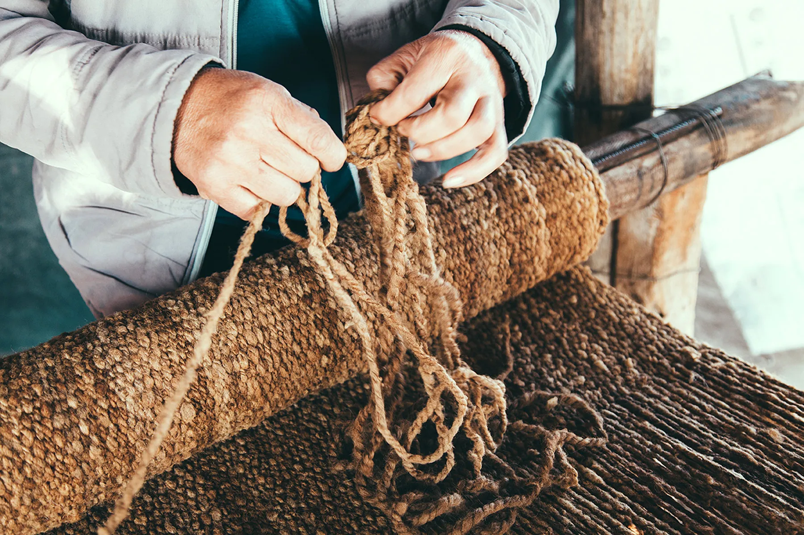
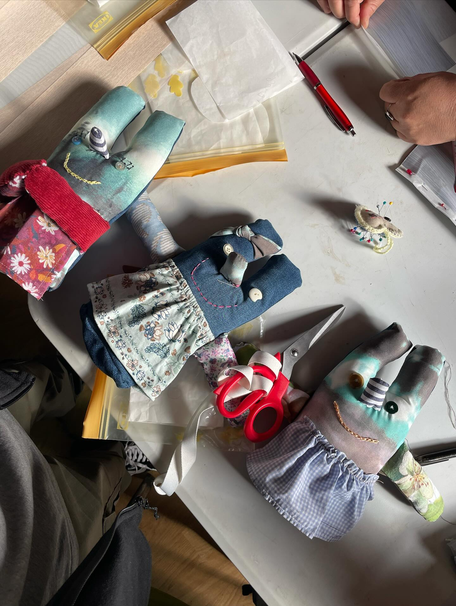
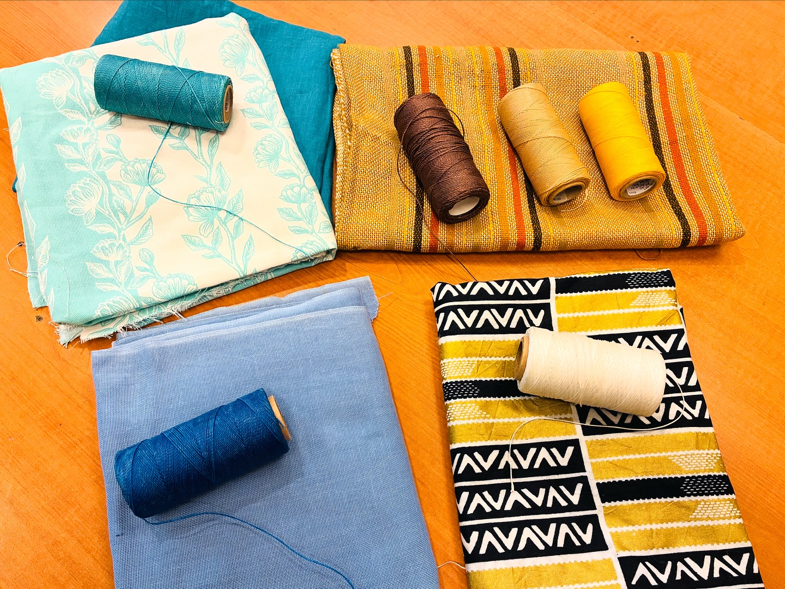
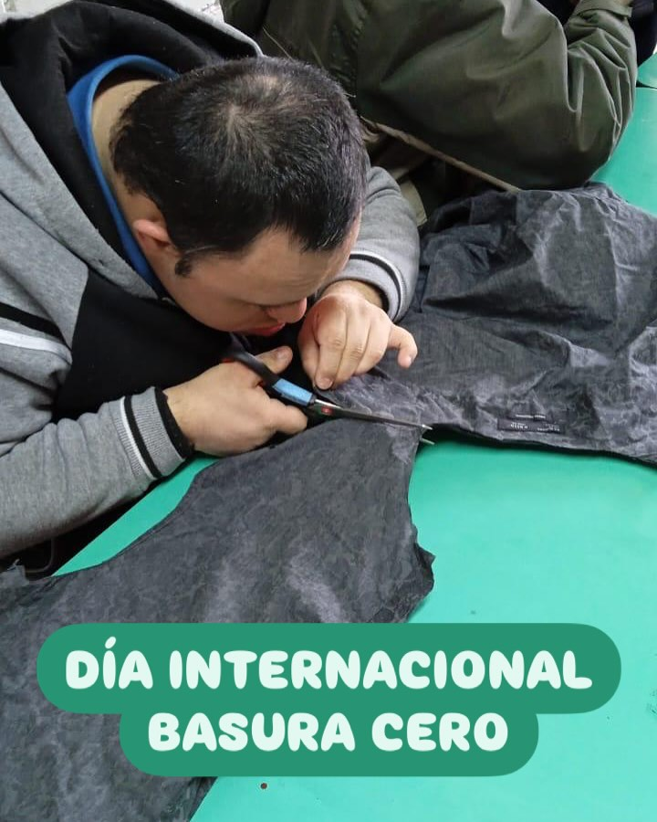

Diseño circular con impacto social
Talleres activos
Formación práctica y creativa
Textiles recuperados
Segunda vida para materiales
Comunidad en red
Red de mujeres y colaboradores
La belleza de lo simple, hecha con propósito.
Transformamos textiles descartados en oportunidades reales, combinando sostenibilidad, oficio y trabajo colaborativo.

Reutilizar
Convertimos residuos textiles en piezas con valor funcional y emocional.
Formar
Compartimos herramientas para aprender, emprender y crear con autonomía.
Conectar
Tejemos alianzas entre personas, artesanas y organizaciones de impacto.
Quiénes somos
Una fundación que convierte descarte en oportunidad.
Nacimos para darle una segunda vida a los textiles que el mundo descarta. Creemos en el diseño con consciencia, el trabajo digno y el valor de aprender haciendo.
Trabajamos junto a mujeres artesanas para crear piezas únicas, fortalecer procesos productivos y generar impacto social sostenible.
- Producción responsable
- Oficio y capacitación
- Comunidad y colaboración

Proyectos
Iniciativas pensadas para crecer con impacto.

Formación
Talleres creativos
Espacios prácticos para transformar prendas y aprender costura consciente desde cero.

Economía solidaria
Vida Circular
Recolectamos y distribuimos material para evitar el desperdicio y ampliar su vida útil, contribuyendo con el cuidado del medio ambiente.

Inclusividad
Inclusividad y diversidad
Fomentamos la participación de todos los sectores de la comunidad, promoviendo la equidad y el respeto por la diversidad.
Contacto
Hablemos de alianzas, talleres y nuevas ideas.
Si quieres colaborar, donar materiales o conocer más sobre nuestro trabajo, escríbenos.